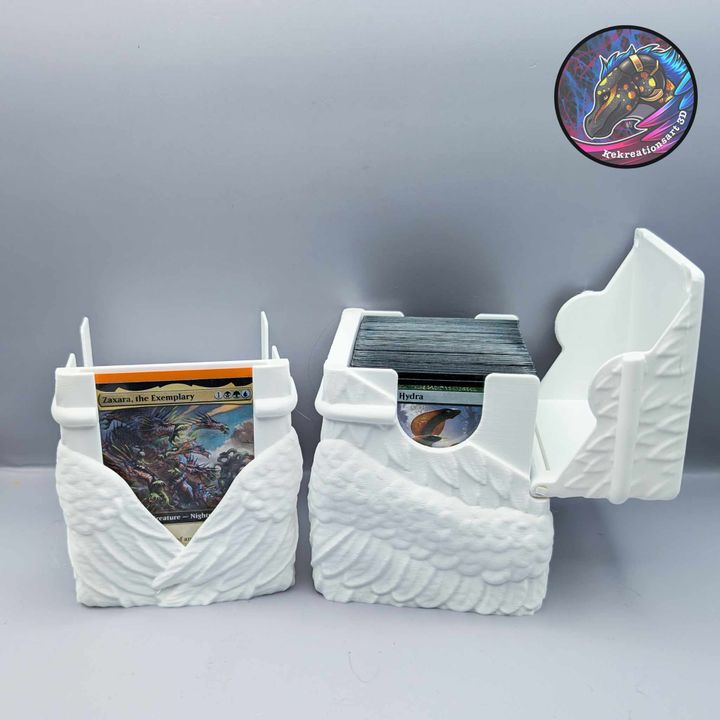

STL MODEL ARCHIVE · 2026-07-11
2026年07月11日STL图纸文件分享｜Angel Wing Deck Box
本期分享 Angel Wing Deck Box：一款以层叠天使翅膀浮雕为视觉主题的卡牌收纳盒／牌盒。模型文件已经过压缩包完整性检查、STL 检查与 OUART 标准化整理。

模型介绍
盒体正面由左右展开并交叠的羽翼构成，羽毛层次形成清晰的浮雕纹理。盒盖延续翅膀造型，开启后可直接看到内部卡牌；前部开口方便查看和取放牌组。它是一件卡牌收纳用品模型，并非角色雕像。
打印与使用建议
- 切片前确认盒体、盒盖和连接结构的装配间隙。
- 羽毛浮雕细节建议使用较细层高，并检查边缘支撑。
- 完成打印后先试装空盒，再放入卡牌检查容量、盒盖开合与取卡空间。
文件下载
百度网盘链接：https://pan.baidu.com/s/1usG2aQp6amCyJTlHTd-A-w
提取码：g0v4
以上内容仅供个人学习与非商业用途。ONLY FOR PERSONAL USE (NON-COMMERCIAL).